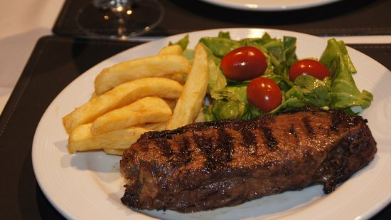
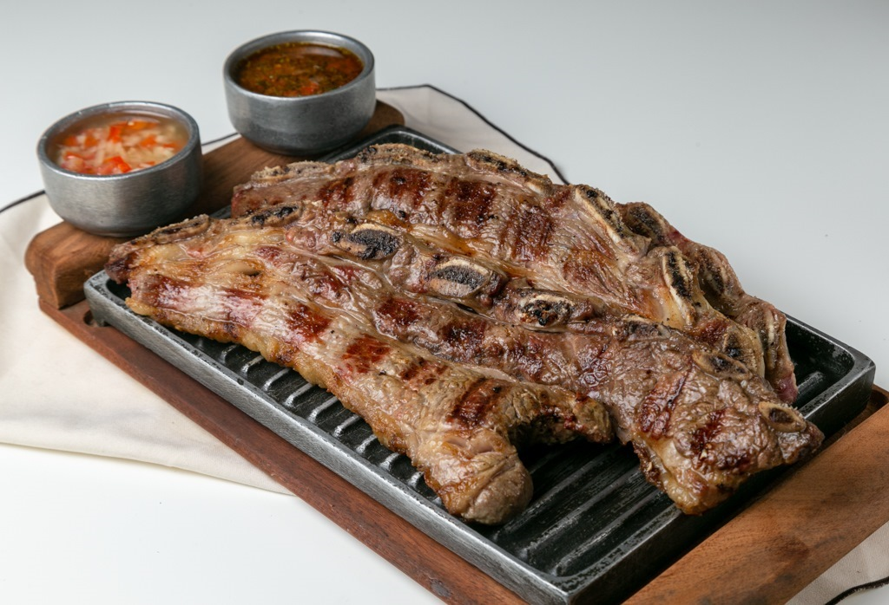
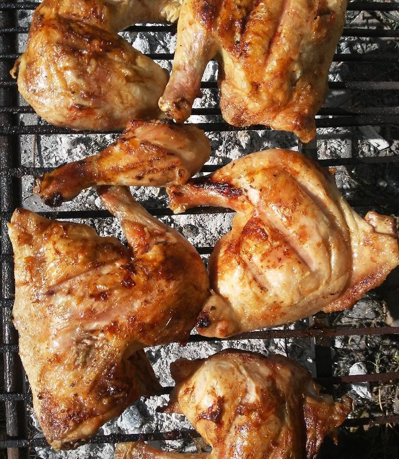
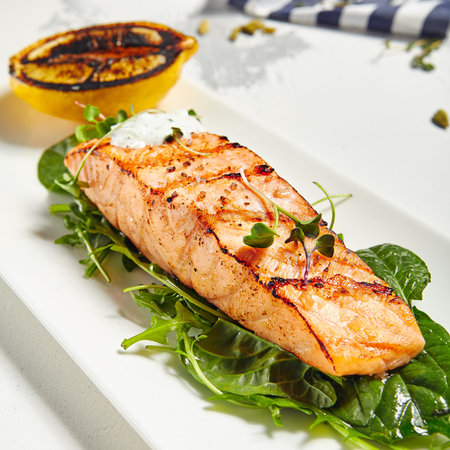
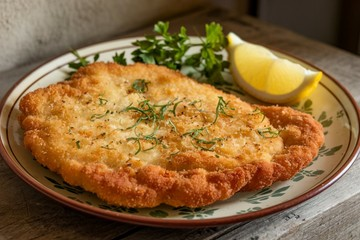
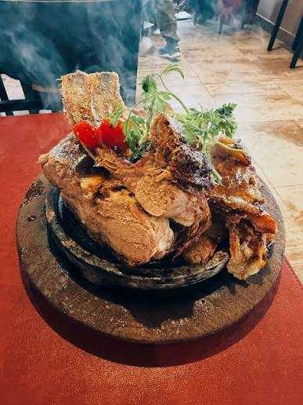
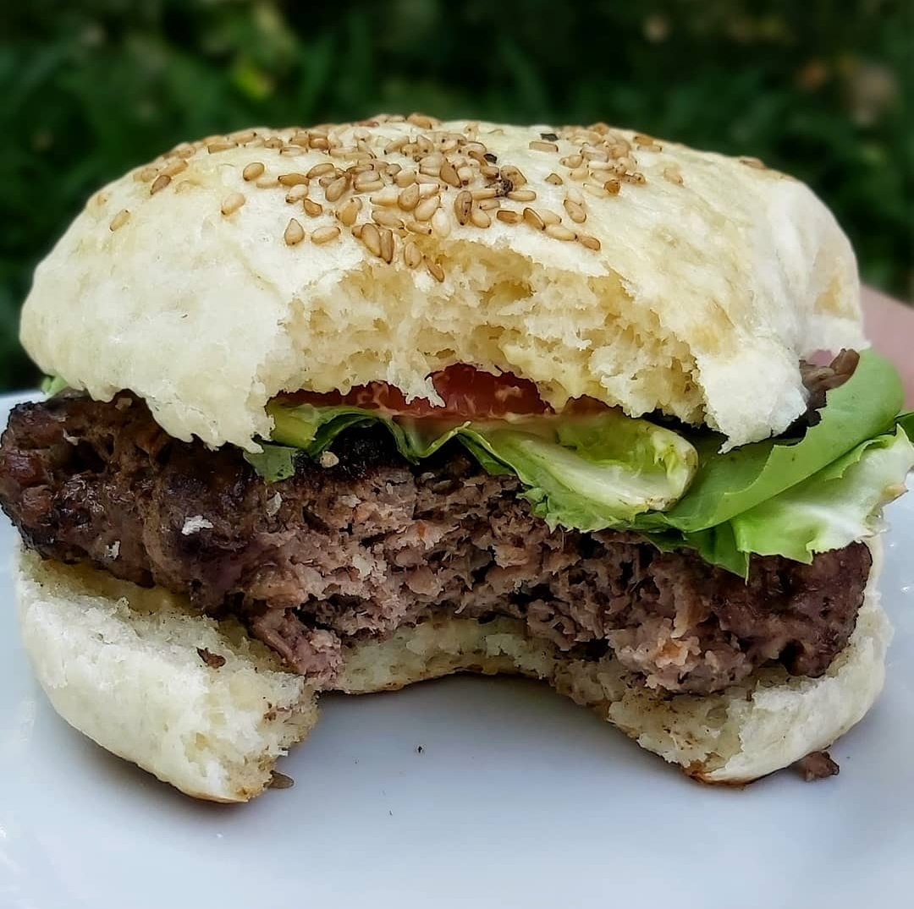
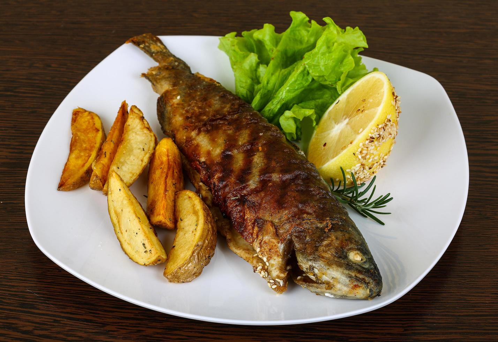

Platos principales
-
Bife de chorizo a la brasa
Corte de carne vacuna cocinado a la parrilla para conservar su sabor y jugosidad.

-
Asado de tira
Corte tradicional argentino preparado lentamente a la brasa.

-
Pollo de campo a la parrilla
Pollo marinado con hierbas y cocinado lentamente a la parrilla.

-
Salmón patagónico
Salmón grillado acompañado con hierbas frescas y limón.

-
Milanesa de campo
Milanesa casera de carne vacuna con rebozado crocante.

-
Cordero patagónico
Cordero cocinado lentamente con hierbas y acompañado con su jugo.

-
Hamburguesa de la casa
Hamburguesa artesanal de carne vacuna con pan casero y vegetales.

-
Pesca del día
Pescado fresco preparado a la parrilla con hierbas y limón.
